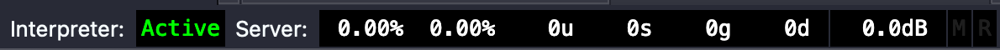

This page documents my use of the environment and programming language SuperCollider. Most of this will be written for Mac Os. If you want to get started with SuperCollider I recommend that you watch the videos of Eli Fieldsteel or have a look at the book A gentle introduction to SuperCollider by Bruno Ruviaro.
04-12-2023
-------------------------------------------------------------------------------
setting up SuperCollider (2)
-------------------------------------------------------------------------------
If you want to use SuperCollider it might be interesting to incorporate external instruments or use send/return effects. To do this you will need an external audio interface. I’m using the Native Instruments Komplete Audio 6 MK2. To see which output devices are available for SuperCollider run the following code:
ServerOptions.outDevices; // output devices
Based on this information you can set one of these as the default device. The previous post discussed routing your audio internally into your DAW using software such as Soundflower. Now we are going to combine this with our external audio interface to make an make aggregate device. For MacOs users this is pretty straightforward (Windows user can try using ASIO4ALL)
Once you’ve set up the aggregate device you want to run the above command again, if all is well it should show up in the list of possible output devices. Next use the following code to set it as a the default device.
Server.default.options.outDevice_("[insert the name of your aggregate device here]");
My aggregate device now consists of 6 channels on my external audio interface and 2 additional channels, these are the channels that will contain the SuperCollider audio. However, we do have to make sure that the audio from SuperCollider is being sent to channel 7/8. In order to do this we first need to expand our number of output channels to 8.
s.options.numOutputBusChannels(8);
You can check the levels of the different busses by running:
s.meter
Let’s run the simple sine oscillator with two busses that we made in the previous post. Notice that the sound will not be sent through to your DAW as it is sent to busses 1 & 2. in order to write a signal to another bus we have to use the Out() class which has the following methods:
Out.ar(bus, channelsArray)
Out.kr(bus, channelsArray)
You can see that you can either send audio rate (ar) or control rate (kr). In this case we want to send out our sine wave audio rate. To do this we will make a SynthDef. A SynthDef is way to create a server synth definition that we can reuse (more on SynthDefs in the next post).
(
SynthDef("sine", //name of the synth = "sine"
{ arg freq=800; //set argument freq to 800
var osc; //define a variable osc
osc = SinOsc.ar(freq, 0, 0.1); // set variable osc to 800 Hz sine oscillator
Out.ar(0, osc); // send output (osc) to audio bus zero (0).
}).add)
Now we can play our SynthDef by assigning it to a variable and calling it by name, in this case “sine”.
d = Synth("sine")
we can stop the sound by freeing it and reassigning the variable.
d = d.free
Now, if we send our output to bus 7 it should arrive in your DAW.
(
SynthDef("sine", { arg freq=800; //set argument freq to 800
var osc; //define a variable osc
osc = SinOsc.ar(freq, 0, 0.1); // set variable osc to 800 Hz sine oscillator
Out.ar(7, osc); // send output (osc) to audio bus zero (7).
}).add)
05-10-2023
-------------------------------------------------------------------------------
setting up SuperCollider (1)
-------------------------------------------------------------------------------
SuperCollider is based on a client/server architecture. In short we have an audio server (which makes the sound) that we are able to communicate with using a client. The server is also called scsynth and the client as sclang, which functions as both the client and the interpreter. To execute commands we type our code in the high-level SuperColliding language which is then translated and sent to the server. That’s why, when you start the SuperCollider environment you will see this at the bottom:
Meaning that your Interpreter (or client) is Active but you still need to start (or boot) the server. You can do this using the following command.
s.boot
To run the code: put your text cursor at the end of the line of code you want to run and pres shift + enter. There is one default server stored in the interpreter variable s. The server object has a number of methods which can be accessed by writing a period (.) followed by the name of the method, e.g. server.boot. For more information about the server class have a look at the documentation. If you want to stop the server you can use the quit method by writing s.quit. Once you’ve booted the server, the next thing you want to do is set a hard limit for the output. This is not built into SuperCollider but can be installed as an additional package or a Quark. You can find more information about how to use Quarks over here: Using Quarks. The Quark you need is called Safety. I usually set the limiter at 0.5 but you can find your own preference.
Safety.setLimit(0.5)
Instead of just running SuperCollider on its own it can be interesting to run it into your DAW of choice. You can route your audio into another device internally using open source software such as Soundflower for Mac OS. You can check if it is working by running a simple sine oscillator at 220 hertz as follows: (before playing the sound turn your volume way down and then gradually turn it back up)
{SinOsc.ar(220)}.play
To stop the sound press shift +command + . (period). You've probably noticed that the sound is just coming from one speaker. Let’s make it a bit more interesting by expanding it to two channels by adding an array:
{SinOsc.ar([220, 220]}.play
So what we've got so far is
s.boot //booting the server
Safety.setLimit(0.5) //set a limit of the output
{SinOsc.ar([220, 220]}.play //play a sine oscillator 220 Hz on channel 0 and 1